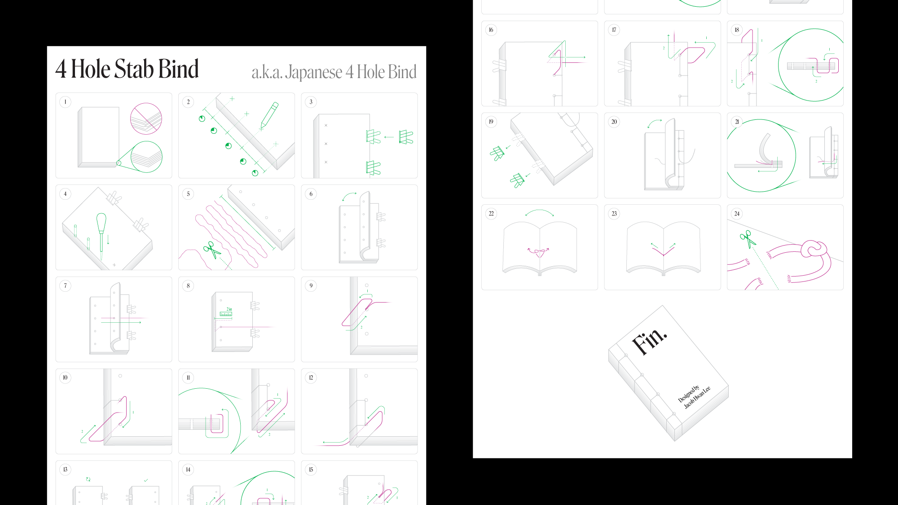
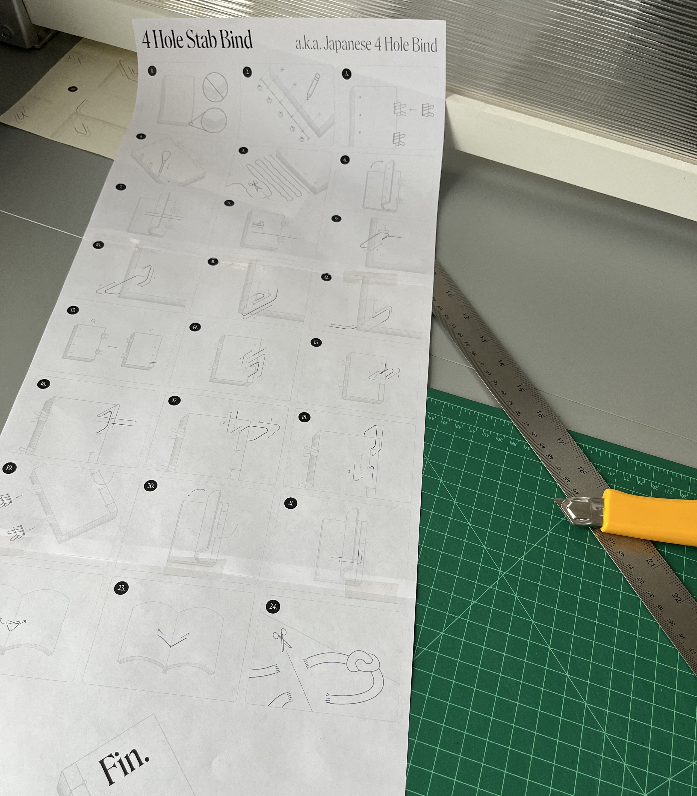
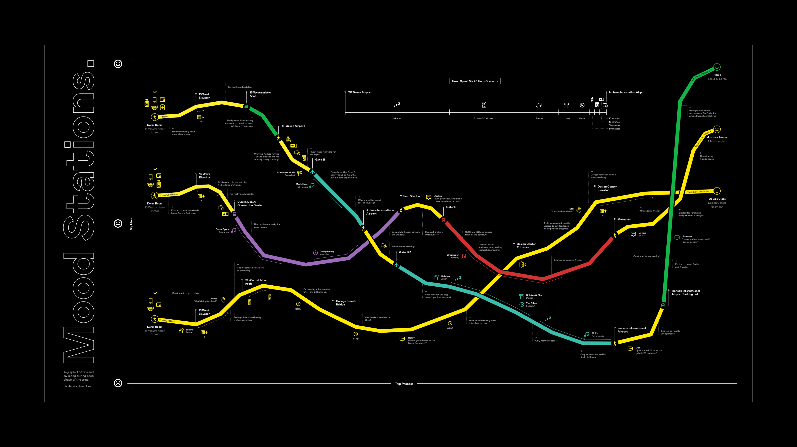
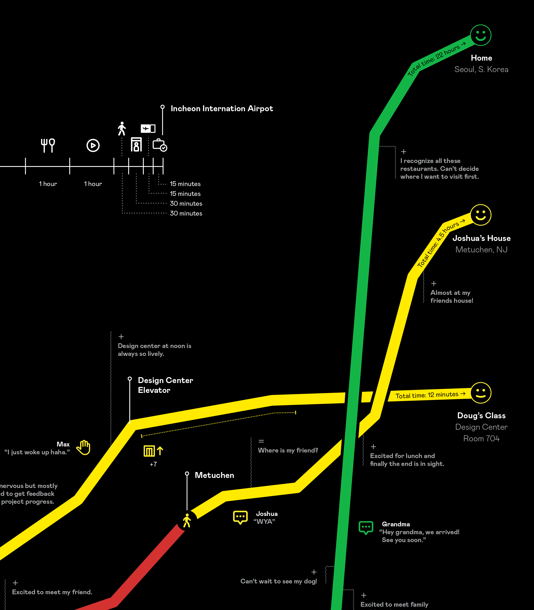
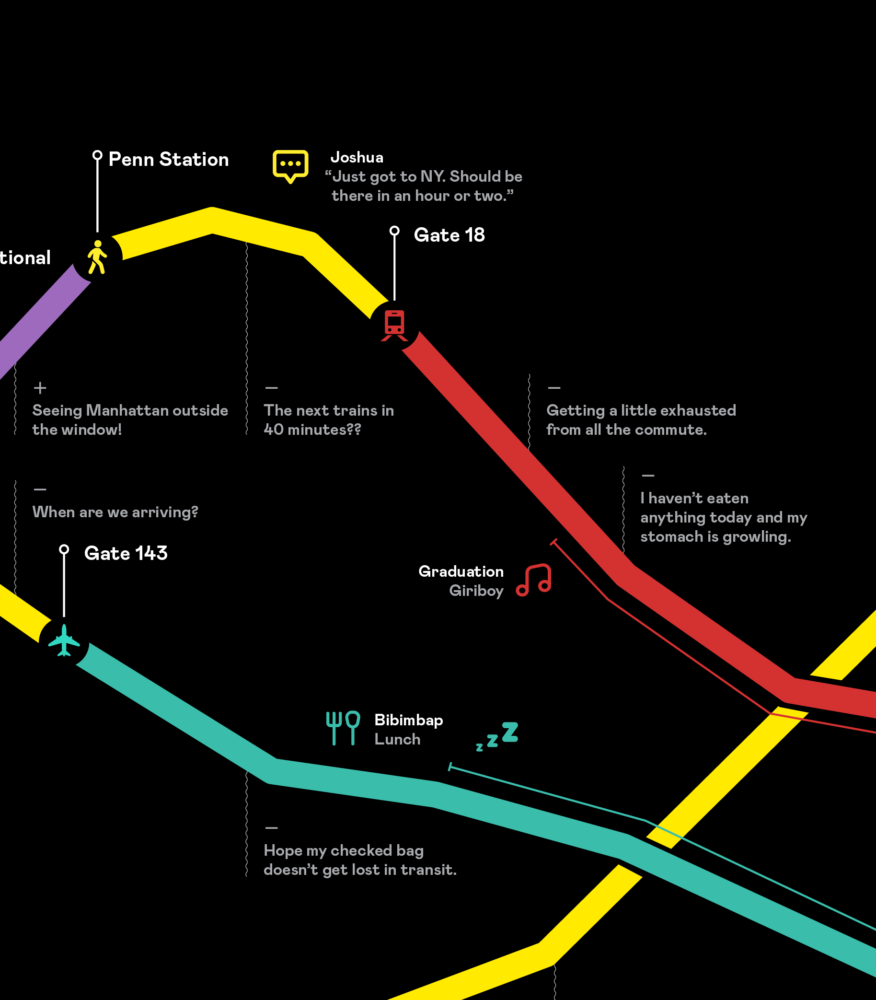

For ‘Greece, an Overview’, I was asked to create an infographic for Greece including 30 points of data such as population density and demographics.
 Diagram sketches and tile print for testing poster scale
Diagram sketches and tile print for testing poster scale
30 data points lead to a lot of diagrams and I designed each diagram to visually feel relevant to the kind of information they are representing.
I also wanted to challenge myself into using a black and white palette for a complex infographic like ‘Greece, an Overview’ which lead to the use of line & dot patterns.

For ‘4 Hole Stab Bind’, I was asked to share a process that involved more than 15 steps without the aid of text. I chose to share the process of stab binding a book.
 Final poster
Final poster

Early test print of the poster
Without text, symbols and colors were all I had to communicate a complicated process to the viewers. I used universal symbols like the arrow and two colors: green for call to action and red for string that weaves in and out of the book.

For ‘Mood Stations’, I was asked to diagram 3 trips from my dorm room to 3 locations with varying distances.


I borrowed the visuals of a line chart to indicate my mood during each phase of these trips.